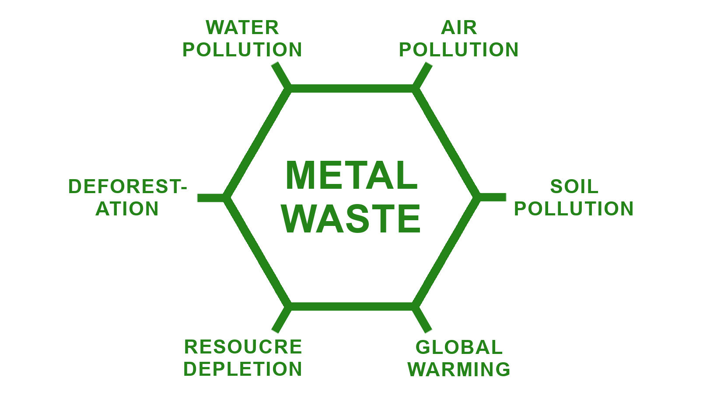

Metal waste is a bigger problem than people realize. The metal ore mining industry is responsible for 4-7% of the world's greenhouse gas emissions. Metal ore mining is not only polluting, but it also causes environmental damage in more local ways. In 2019, 79% of metal ore mining happened in some of the most species rich biomes in the world. Ore mining causes deforestation and damage to the local wildlife. Metal is used in many things, from computers to refrigerators, so its limited availability will become a problem in the future. Along with metal ore mining, metal waste causes soil pollution and water contamination. These concerns are only getting worse as metal ore mining has doubled over the past 20 years.
Effects of Metal Waste: Pollution, Deforestation, Global Warming, and Resource Depletion